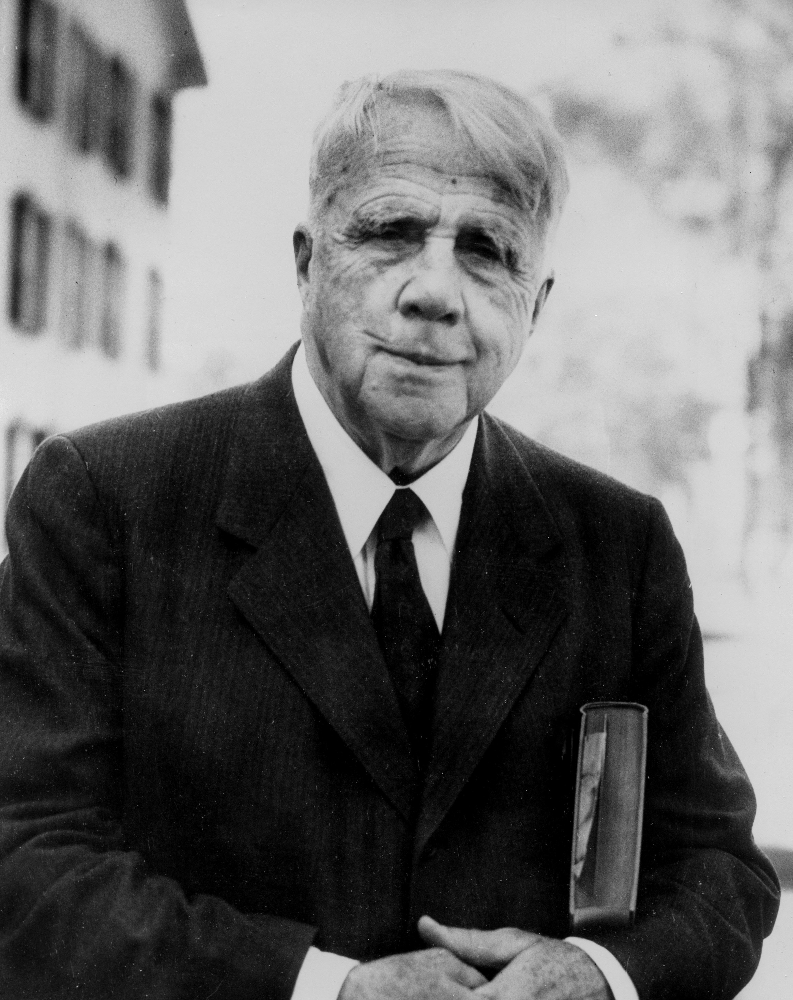

"An iconic American poet, painted the rural landscapes of New England with lyrical mastery, delving into profound themes of nature, choices, and the human condition."
Robert Frost, a poetic luminary of the 20th century, sculpted verses that etched the
rural tapestry of New England into the literary consciousness. Born in San Francisco,
Frost's work is an exploration of the human experience set against the backdrop of
nature. His deceptively simple language masks profound observations on life, often
delving into the choices individuals make and the consequences that unfold. Renowned
for poems like "The Road Not Taken" and "Stopping by Woods on a Snowy Evening," Frost's mastery lies in his ability to distill complex emotions and philosophical musings into accessible yet layered verses. Awarded four Pulitzer Prizes for Poetry, Frost's legacy endures as a poetic voice that resonates with readers, inviting contemplation
on the interplay between nature, choices, and the human soul.
